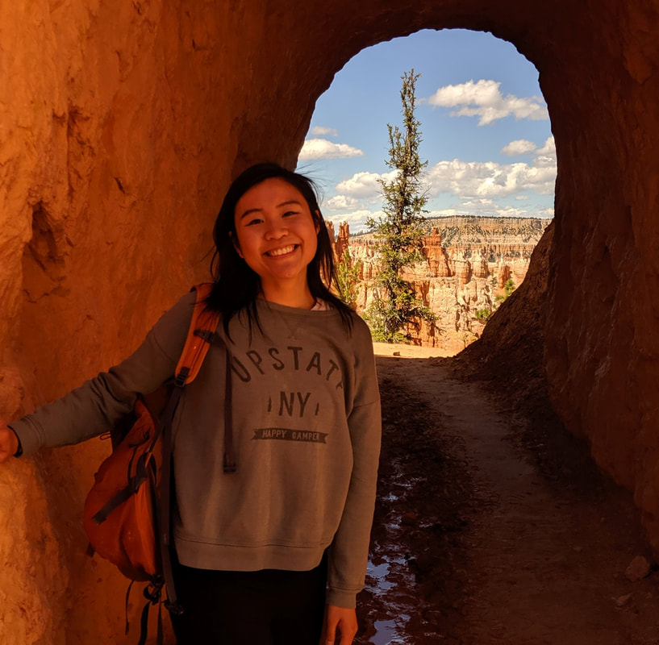

Amy Guo
Graduate Student
In the lab: 2019–2025
Now: Senior ML Scientist, Genentech
I am interested in the designability of dynamic proteins and mini-proteins. Currently, I am working on creating mini-ACE2 designs to bind the SARS-CoV-2 spike protein.
Education
- Bachelor of Science, Bioengineering and Chemistry/Materials Science, UCLA
Publications
- Seki, K., Guo, A. B., Akpinaroglu, D. & Kortemme, T. A combinatorial mutational map of active non-native protein kinases by deep learning guided sequence design. Preprint at https://doi.org/10.1101/2025.08.03.668353 (2025).
- Akpinaroglu, D., Seki, K., Guo, A., Zhu, E., Kelly, M. J. S. & Kortemme, T. Structure-conditioned masked language models for protein sequence design generalize beyond the native sequence space. Preprint at https://doi.org/10.1101/2023.12.15.571823 (2023).
- Alberstein, R. G.*, Guo, A. B.* & Kortemme, T. Design principles of protein switches. Curr. Opin. Struct. Biol. 72, 71–78 (2022).
* Co-first authors